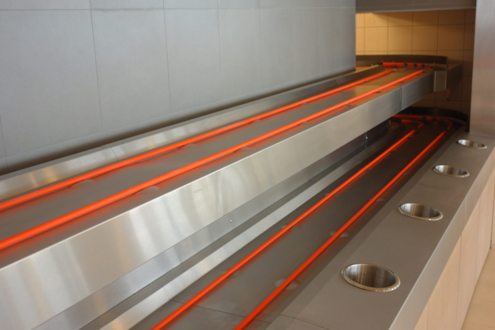
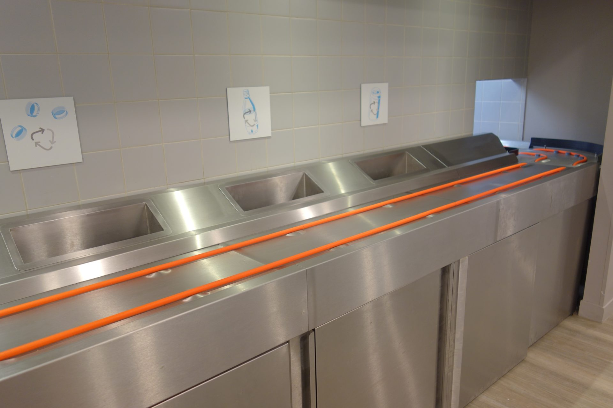

1996
Création de Sopacom Industrie, qui s’installe dans une usine de 1 300 m² regroupant le stockage, la tôlerie, la fabrication, la zone d’emballage / expédition et, à l’étage, l’administratif et le commercial.
Depuis son origine, en se spécialisant sur une activité — « l’environnement laverie » —, Sopacom Industrie est devenue, selon sa présentation, le leader européen de son secteur.

Sopacom Industrie se développe aujourd’hui à l’international sur son métier d’origine : l’environnement mécanisé horizontal et vertical pour laverie vaisselle.
Nos fabrications sont aussi des convoyeurs de dressage neutres et réfrigérés, des convoyeurs à sushi « Kaiten » et une gamme périphérique incontournable à notre cœur de métier. En associant nos compétences au professionnalisme et aux services de proximité de nos partenaires revendeurs / installateurs, nous répondons aux attentes et exigences des utilisateurs.
Sources : Site actuel sopacom-industrie.fr · Présentation « Environnement laverie mécanisé » (PDF Sopacom)
La difficulté commence quand il faut s’intégrer dans une surface définie et répondre à toutes les contraintes.
La difficulté commence quand il faut s’intégrer dans une surface définie et répondre à toutes les contraintes. Chaque implantation est étudiée en fonction du local, des besoins du moment et des perspectives d’évolution à long terme.
Source : Site actuel sopacom-industrie.fr
Un bureau d’études interne et une bibliothèque AutoCAD propre à Sopacom, mise à disposition des bureaux d’études pour réaliser une pré-étude. Depuis 2006, toute la gamme est conçue sous SolidWorks 3D.
Source : Site actuel sopacom-industrie.fr
Une équipe de 20 professionnels réunis à Stains — commerciaux, dessinateurs DAO, tôliers, électromécaniciens, monteurs — assure le suivi des commandes d’un bout à l’autre de la chaîne de fabrication.
Source : Site actuel sopacom-industrie.fr
Les compétences de Sopacom sont associées au professionnalisme et aux services de proximité de ses partenaires revendeurs / installateurs. Un showroom permet de comprendre le fonctionnement d’une laverie mécanisée.
Source : Site actuel sopacom-industrie.fr
Dès 1996, Sopacom a intégré un bureau d’études et constitué sa propre bibliothèque AutoCAD, mise à disposition pour réaliser une pré-étude. Avec un catalogue de 1 000 références, « 1 000 façons de trouver une solution ».
Développement, fabrication et commercialisation de la manutention mécanisée dans l’unité de production de Stains, pour des réalisations sur mesure. Cette évolution est aussi le fruit d’une écoute constante des utilisateurs, prescripteurs et installateurs.
Avec des centaines de réalisations par an, Sopacom dispose d’un « showroom » aux quatre coins de la France et à l’étranger, et vous accueille au sein de l’unité de fabrication pour comprendre le principe d’une laverie mécanisée.
Depuis 2008, un bureau d’études Recherche et Développement : automates de mécanisation, convoyeur à sushi magnétique, solutions plus économes en énergie et en fluides.
Source : Site actuel sopacom-industrie.fr
